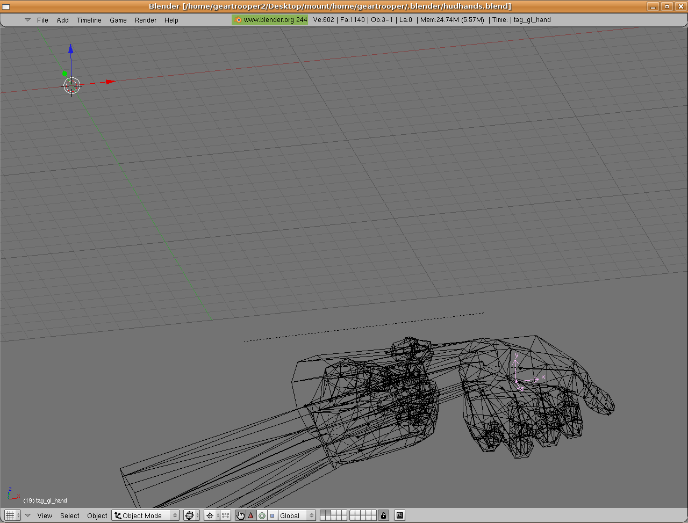
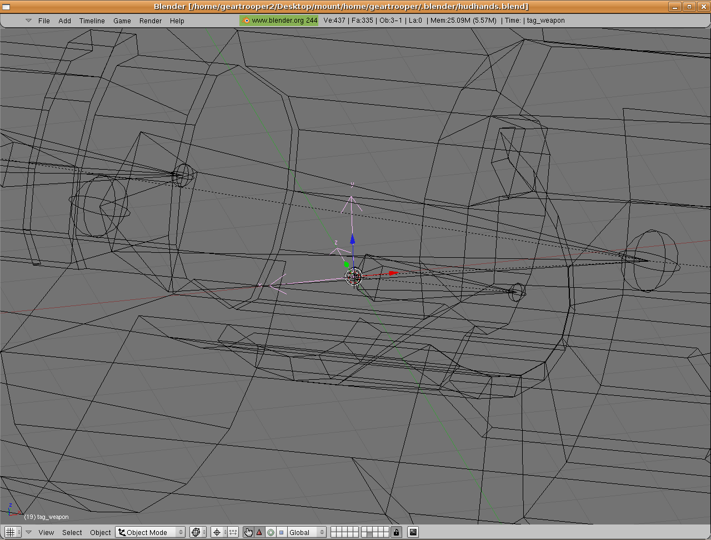
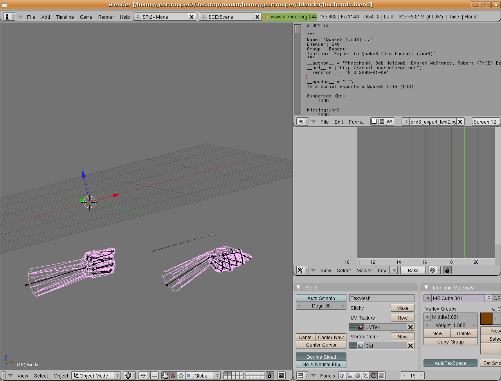
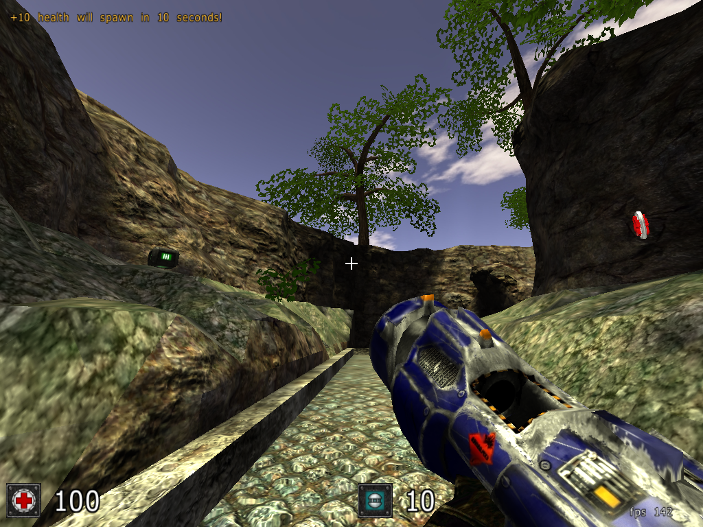

The reason for this is Blender's axis orientation is different from that of Sauerbraten and most graphic applications, for that matter.
Now align the empty for the duplicate weapon in the same fashion with this orientation; X axis on X, Y axis on Y, Z axis on Z. I am unsure as to the reasoning behind this. But it works. :P

Now you are ready to export. Rename the hands' empty to tag_weapon. Select the armature to ensure the proper action is represented in the action editor. Open the export script obtained
here in another window;

Ensure you are on the final frame of the animation. Right click on the text window and Execute Script! Name the file something appropriate like Gl_hands.md3. Now rename the empty to its original, tag_hands. Select the empty for the duplicate weapon and name it tag_weapon. Ensure the proper action appears in the action editor. Select the empty and the weapon. Right click on the text window and Execute Script. Name the file appropriately with the .md3 extension. Now for a quick trial of your newly created hands and weapon write a quick md3.cfg like so;
md3load Glhands.md3
md3skin Hands ./handtexture.jpg
md3anim "gun idle" 0 1
md3anim "gun shoot" 1 18
md3load gl.md3
md3skin gl ./gltexture.jpg
md3anim "gun idle" 0 1
md3anim "gun shoot" 1 18
md3link 0 1 tag_weapon
and save it. place all of the necessary files into :Sauerbraten/packages/models/hudguns/gl/ after moving its current contents. Fire up Sauerbraten to test the location of the hands and weapon and the linkage/orientation. If all went well proceed to the next step. Otherwise readjust your animations and/or models as necessary until you are satisfied. If all goes well it should look something like this;

Repeat the same process for as many weapons as you wish to have. If you want to use one single set of hands for all the weapons use a separate action for the hands for each weapon. Align all of the hand animations in the nla editor and inform Sauerbraten where to find the hands.md3 file which will logically be placed in Sauerbraten/packages/models/hudguns/.
I hope you find success with this tutorial.
-geartrooper